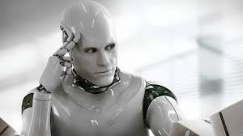

Günümüzde yapay zekânın kullanılma potansiyeli olan binlerce uygulama alanlı bulunmaktadır. Bu alanlar otonom kontrolü ve hedef tespiti gibi askeri uygulamalardan, bilgisayar oyunları ve robotik hayvanlar gibi eğlence dünyasına kadar geniş bir yelpazede değerlendirilebilir. Bunun yanında bankacılık, sağlık ve sigorta şirketlerinde müşteri davranışları ve trend tespiti gibi çok fazla miktarlarda bilgi işlenmesi gereken alanlarda da kullanılabilir.
Günümüze kadar birçok bilim kurgu filmine de konu olan yapay zeka ilerleyen yıllarda bu yöndeki araştırmaların hızlanması ve gelişmesi ile günlük hayatımızı çok farklı yönlere taşıyacağı kesin gibi görünüyor. Yukarıda belirttiğimiz uygulama alanları sadece bunun çok küçük bir miktarı olsa da özellikle askeri amaçla kullanımı geçmiş yıllardan beri birçok kişinin fantezilerini süslemekte ve yakın gelecekte artık insanlar yerine robotların savaşacağına kesin gözle bakmaktadır.
Genellikle genç popülasyonun sıklıkla kullandığı eğlence araçlarından en önemlisi olan oyun dünyasında yapay zeka kırıntıları günümüzde dahi kullanılmaktadır. Ancak gelecekte neler olacağını kestirmek çok güç çünkü bu alanda neler yapılabileceğinin sınırı sadece hayal edebiliyor olmak gibi görünüyor.